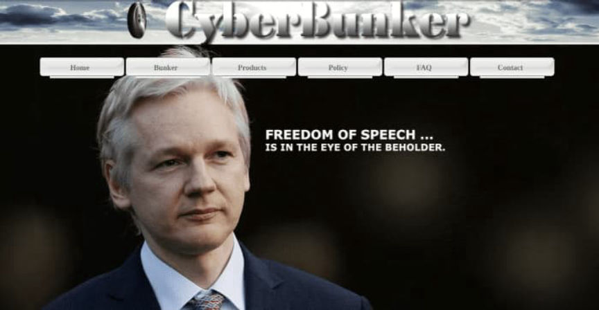
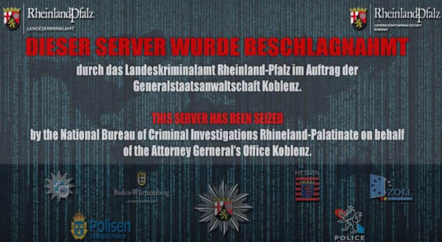
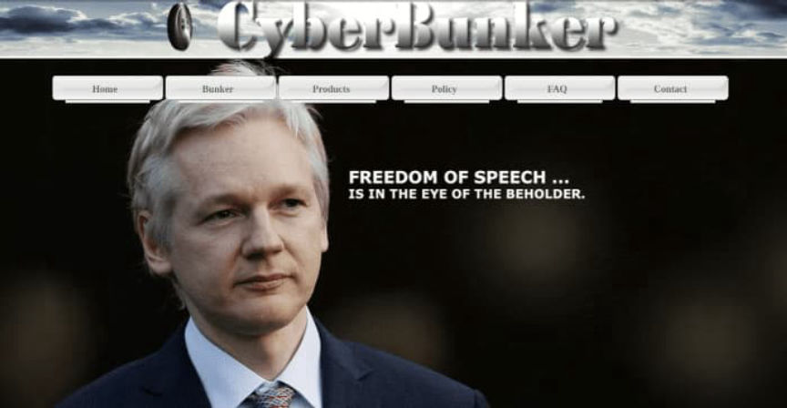
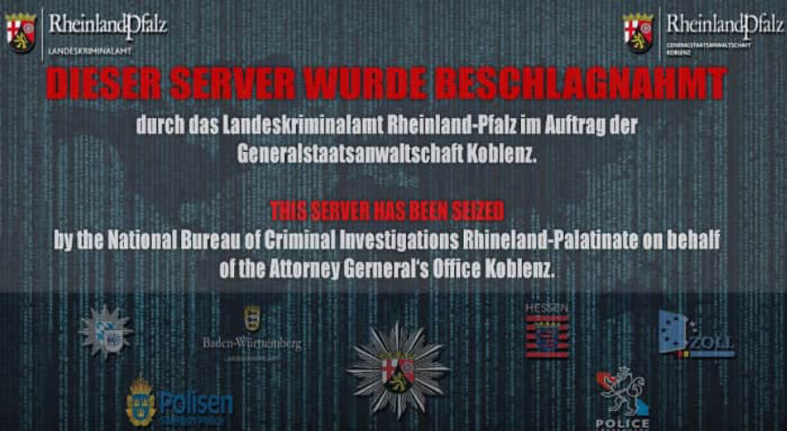

The CyberBunker Case Appeal Heard
~2 min read | Published on 2023-08-25, tagged Darkweb-Market, Sentenced, Wallstreet-Market using 365 words.
The verdict issued by the Trier regional court in the CyberBunker trial was appealed by both the public prosecutor's office and the eight operators of CyberBunker, convicted of being members of a criminal organization.

The CyberBunker was a web-hosting service run from a former NATO bunker in Rhineland-Palatinate, Germany. It provided hosting to platforms involved in the illicit distribution of drugs, child pornography, and stolen information. The defendants operated it for almost six years until their arrest in 2019 following years of investigations.
According to the investigators, the CyberBunker provided hosting to multiple dark web marketplaces including, Cannabis Road, Wall Street Market, and Flugsvamp 2.0.

The defendants were charged with being members of a criminal organization and aiding and abetting in more than 250,000 illicit transactions that took place through the dark web marketplaces hosted on CyberBunker servers.
On December 13, 2021, the Trier Regional Court found the eight defendants, seven men and one woman, guilty of membership in a criminal organization. The main defendant, accused of purchasing the NATO bunker and setting up the web-hosting services, was sentenced to five years and nine months in prison. Six of the other defendants received prison sentences ranging from two years and four months to four years and three months, while the last defendant was sentenced to a suspended sentence of one year.
In addition to the sentences, the defendants were ordered to forfeit funds ranging from between €9,000 and €900,000.
Both the eight defendants and the public prosecutor appealed the verdict. The hearing took place on August 24, 2023, at the Federal Court of Justice in Karlsruhe.
The public prosecutor wants the defendants convicted of aiding and abetting crimes committed through the platforms hosted on their servers.
The defendant contested their conviction. They argue that as web-hosting providers, they are not responsible for the content of the servers they operate.
The defense attorneys of the defendants who worked at the CyberBunker also said their clients should be treated as normal employees since they were working as instructed by their employer. The defense said their clients were not participating in a criminal organization but were simply involved in a normal employment relationship.
The court will issue a ruling on September 12.

The CyberBunker was a web-hosting service run from a former NATO bunker in Rhineland-Palatinate, Germany. It provided hosting to platforms involved in the illicit distribution of drugs, child pornography, and stolen information. The defendants operated it for almost six years until their arrest in 2019 following years of investigations.
According to the investigators, the CyberBunker provided hosting to multiple dark web marketplaces including, Cannabis Road, Wall Street Market, and Flugsvamp 2.0.

Cyberbunker site's seizure banner
The defendants were charged with being members of a criminal organization and aiding and abetting in more than 250,000 illicit transactions that took place through the dark web marketplaces hosted on CyberBunker servers.
On December 13, 2021, the Trier Regional Court found the eight defendants, seven men and one woman, guilty of membership in a criminal organization. The main defendant, accused of purchasing the NATO bunker and setting up the web-hosting services, was sentenced to five years and nine months in prison. Six of the other defendants received prison sentences ranging from two years and four months to four years and three months, while the last defendant was sentenced to a suspended sentence of one year.
In addition to the sentences, the defendants were ordered to forfeit funds ranging from between €9,000 and €900,000.
Both the eight defendants and the public prosecutor appealed the verdict. The hearing took place on August 24, 2023, at the Federal Court of Justice in Karlsruhe.
The public prosecutor wants the defendants convicted of aiding and abetting crimes committed through the platforms hosted on their servers.
The defendant contested their conviction. They argue that as web-hosting providers, they are not responsible for the content of the servers they operate.
The defense attorneys of the defendants who worked at the CyberBunker also said their clients should be treated as normal employees since they were working as instructed by their employer. The defense said their clients were not participating in a criminal organization but were simply involved in a normal employment relationship.
The court will issue a ruling on September 12.